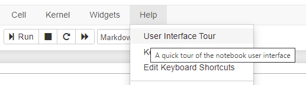
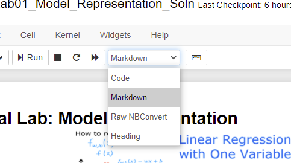
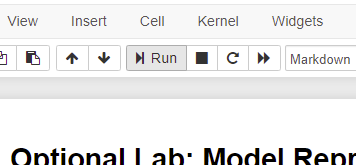

ML-吴恩达机器学习-监督学习
目录
资源
- 视频: (强推|双字)2022吴恩达机器学习Deeplearning.ai课程_哔哩哔哩_bilibili
- 课件: kaieye/2022-Machine-Learning-Specialization (github.com)
- 笔记: fengdu78/Coursera-ML-AndrewNg-Notes: 吴恩达老师的机器学习课程个人笔记 (github.com)
- 视频: 吴恩达机器学习 - 网易云课堂 (163.com)
- 官网: 机器学习 | Coursera
Week1
Lab01_Python_Jupyter
对应课程: 2.6 Jupyter notebooks_哔哩哔哩_bilibili
Optional Lab: Brief Introduction to Python and Jupyter Notebooks
可选实验：对 Python 与 Jupyter Notebooks 作简短的介绍。
Welcome to the first optional lab!
欢迎来到第一次可选实验！
Optional labs are available to:
可选实验的用处：
provide information - like this notebook
- 提供信息——像这个笔记本
reinforce lecture material with hands-on examples
- 对上手实例提供更好的课程工具
provide working examples of routines used in the graded labs
- 提供作业实例用于各个实验
Goals
目标
In this lab, you will:
在这次实验中，你将：
Get a brief introduction to Jupyter notebooks
- 获得对 Jupyter notebooks 的简短介绍
Take a tour of Jupyter notebooks
- 体验一次 Jupyter notebooks
Learn the difference between markdown cells and code cells
- 了解到 markdown cells 与 code cells 的区别
Practice some basic python
- 练习一些基础 Python 知识
The easiest way to become familiar with Jupyter notebooks is to take the tour available above in the Help menu:
熟悉 Jupyter notebooks 最简单的方法就是点击 Help 菜单栏中的 User Interface Tour （用户导览）选项

Jupyter notebooks have two types of cells that are used in this course. Cells such as this which contain documentation called Markdown Cells. The name is derived from the simple formatting language used in the cells. You will not be required to produce markdown cells. Its useful to understand the cell pulldown shown in graphic below. Occasionally, a cell will end up in the wrong mode and you may need to restore it to the right state:
在这个资源中，使用到了 Jupyter notebooks 的两种类型的片段。包含文档信息的片段被称之为 Markdown Cells。这个片段命名来自于其使用的简洁格式语言。你并不被要求创建 markdown cells。但这对你理解下面的cell pulldown 很有帮助。有时，单元格会以错误的模式结束，您可能需要将其恢复到正确的状态：

The other type of cell is the code cell where you will write your code:
另一种类型的片段被称之为 code cell，你可以在这里撰写你的代码：
|
This is code cell
Python
You can write your code in the code cells.
你可以在 code cells 中撰写你的代码，
To run the code, select the cell and either
要想运行代码，选择这个片段并：
- hold the shift-key down and hit ‘enter’ or ‘return’
- 按下 Shift+Enter（或Return）键
- click the ‘run’ arrow above
- 点击 run 按钮

Print statement
输出结果
Print statements will generally use the python f-string style.
输出结果默认使用 python 的 f-string 风格
Try creating your own print in the following cell.
尝试在下面这个片段创建你自己的输出。
Try both methods of running the cell.
尝试两种方法运行这个片段。
|
f strings allow you to embed variables right in the strings!
Congratulations!
恭喜！
You now know how to find your way around a Jupyter Notebook.
你知道了怎么使用Jupyter Notebook。